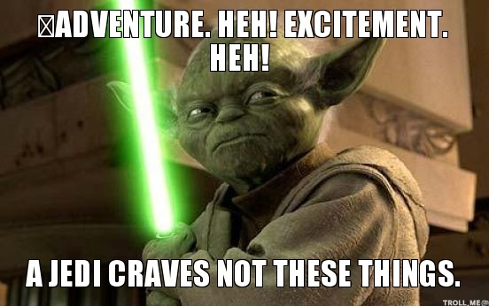

You’ve learned some of this before
Please help me guide the conversation, and tell us what you’ve learned
1: “Will was surprised that people signed up for this class.”
2: “A loss meme, Priya was judged for posting.”
3: “Alonso liked all the pupusas he tried them”
4: “Maria walk to a parks on Weekend.”
5: “Drake funny laughed meme Murray the at.”
6: “이것은 올바른 영어가 아닙니다”
They get progressively harder to understand
They are not ‘wrong’ so much as ‘broken’
These don’t follow rules that everybody follows
1: There looks to be a problem outside
2: There sounds to be somebody in there
3: There smells to be something rotten in there
4: There feels to be something in the bag
5: There tastes to be an issue with the cookies
6: “Would you like fish and chips?†“Yes, I’ll do those.”
1: “Me and my friend walked over to Geisel”
2: “This class is a strange thing to start your linguistics education with.”
3: “Will loves to defiantly make students cringe when teaching.”
4: “Irregardless of what buttons were pressed; my oven would’nt turn on.”
5: “The cat’s were sleeping on you’re couch over their.”
6: “ur rly gon disliek dis last sntce if ur a eng prof!! 🤣”
They’re all quite understandable, but they break ‘rules’
Spelling conventions
‘Never end a sentence with a preposition’
‘irregardless isn’t a word’
These aren’t rules which ‘matter’ for understanding as in group A
You’ve given a student a B+, and they decide to engage in some grade-grubbing
You receive the following email…
1: “Professor, would it maybe be possible for you to perhaps reconsider my grade on my final paper?”
2: “Will, can you please change my grade on the final? It seems a bit lower than I deserved.”
3: “dude we both know my final grade was way low, could you change it?”
4: “hey prof change mah final proj grade plz. shiz was wayyyyyy too low dawg.”
5: “pls pls pls change my final grade 🥺🥺🥺🥺🥺 fr im so so sad i got an a-”
There are some prescriptive spelling rules broken here, but all are again understandable
Some of these sentences are perfectly well formed in one context (e.g. a group chat) but ‘unacceptable’ in this one
These might be described as ‘too informal’ or ‘inappropriate’ for emailing a professor
The language is not seen as ‘ill formed’, just ‘in the wrong situation’
Which of these example groups were hard to understand?
Which of these example groups are your English teachers concerned with?
Which of these example groups show the influence of social norms?
What causes people to use descriptively ungrammatical language?
What causes people to use prescriptively ungrammatical language?
What causes people to change register?


Grammaticality: Speaker intuitions about whether a chunk of language is ‘correct’, ‘well-formed’, ‘valid’, or ‘understandable’ in their language
Prescriptively Ungrammatical: A judgment that a chunk of language is ‘wrong’ or ‘incorrect’ on the basis of social, societal, contextual, or academic ‘rules’.
Descriptively Ungrammatical: A judgment that a chunk of language is ‘wrong’ or ‘incorrect’ because it’s violating speakers’ actual grammar, and is thus unclear, ill-formed, or difficult to understand
Register: Different manners of speaking your language, which can be more or less appropriate in a given sociocultural context. This often corresponds with ‘formality’